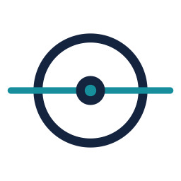
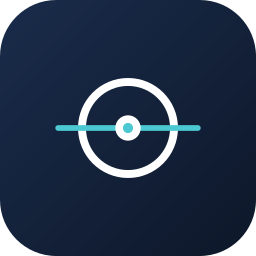

A clean, institutional system for an AI strategy & governance practice — built around the Scan mark: a watch-point on an axis of observation.
01 · Logo
The symbol is fully geometric — a ring, an axis, and a core — so it stays crisp from a 16px favicon to a building sign. Use the lockup wherever space allows; the standalone mark for avatars, app icons, and tight spaces. Keep clear space of at least the ring's diameter on all sides.

Mark · primary

Mark · reverse

App icon
Horizontal lockup
02 · Color
Deep institutional navy carries the brand; a single technical teal does the accenting (links, highlights, the axis). On dark fields, swap teal for the brighter cyan. Keep saturation restrained — the system should read trustworthy, not loud.
03 · Typography
Hanken Grotesk — a humanist sans — carries everything: warm enough to feel human-centered, precise enough to feel expert. JetBrains Mono handles eyebrows, labels, and data. That's the whole system: two families, used with discipline.
A measured, forward-looking advisory practice for organizations adopting AI at scale.
Tutelare helps boards and engineering leaders design the controls, review processes, and human-in-the-loop checkpoints that keep AI systems accountable as they grow.
04 · Components
Assess
Map where AI touches decisions, and where human oversight must sit.
Design
Policies and checkpoints that scale with model capability.
Assure
Standing oversight as your deployment footprint grows.
Oversight isn't a brake on AI adoption — it's the thing that lets you accelerate safely. — Tutelare point of view
05 · On dark
For hero sections and footers, run the system on Navy 900 with the reverse lockup and cyan accents. Body text drops to a soft slate for comfortable contrast.